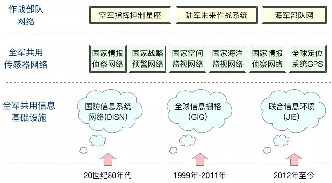
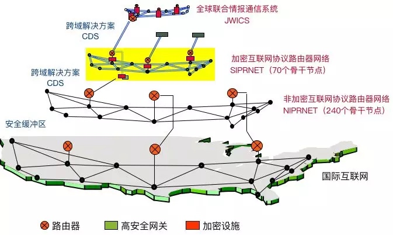
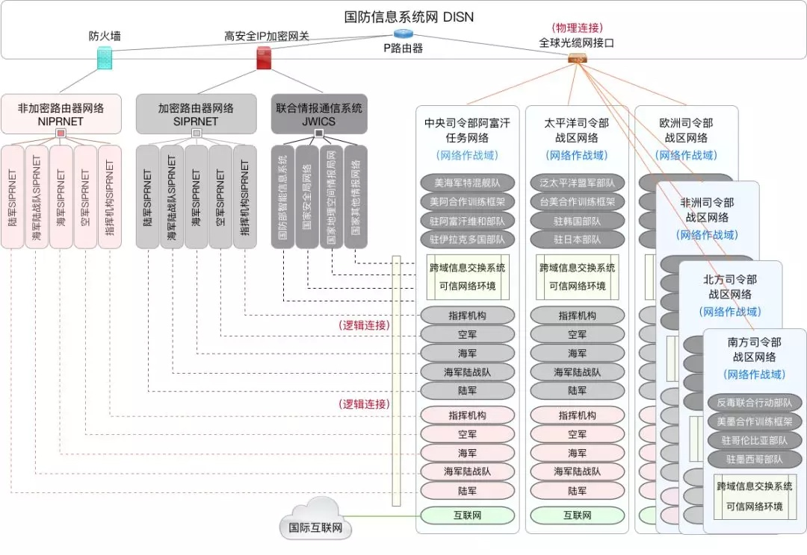

【转】美军信息网络安全架构解析
原文地址：https://mp.weixin.qq.com/s/54-kZjKg2YqWYrzjhk1KGQ
Table of Contents
美军信息网络是世界上最复杂的国家级网络之一，随着美军战略调整始终保持动态演进的态势，平均每5年就会抛出新的网络概念、新的网络架构和新的网络建设计划，其安全体系设计也不断变化，这里主要梳理美军网络整体概况和发展进程，重点关注其网络隔离与跨域融合的安全保障措施。
美军通信网络建设的主管单位是国防部信息系统局（DISA），在DISA的推动引领下，美军已经建成世界上最先进、最复杂、最强大的天地一体化军事通信网系，整体上可以划分为3个层次：全军共用基础信息网络、全军共用传感器网络和作战部队网络。
其中，全军共用基础信息网络，按照其发展历程，大致可以划分为国防通信系统（DCS）与国防信息系统网（DISN）、全球信息栅格（GIG）、基于国防部信息网络（DoDIN）构建联合信息环境（JIE）等3个阶段。
全军共用传感器网络，按照其作战空间不同，主要包括情报侦察网络（由天基侦察卫星和高空侦察机组成）、国家战略预警网络（由天基预警卫星和远程预警雷达组成）、国家空间监视网络（由大型相控阵雷达和对空观测望远镜组成）、国家海洋监视网络（由海洋监视卫星组成）和其他国家级传感器网络（由GPS全球定位系统组成）等。
作战部队网络，按照军种划分，主要包括空军指挥控制星座、陆军未来作战系统和海军部队网等。

美军网络简单来说，就包括美国防部网络和军种网络等两类网络。国防部网络与军种网络是自20世纪60年代起同步建设发展的，国防部网络发端于1960前后建成的”全球军事指挥控制系统”，物理上通过路由器等网络设备、使用与国际互联网相同的协议族将各个指挥系统连接起来，其初衷是国家指挥机构能够对分散部署的部队有效行使指挥权，但因应用需求难以统一和技术条件限制，未能实现全面集成的最初目标。
全球军事指挥控制系统的基础网络被称为”国防通信系统”，DISA将国防通信系统分为两类：加密互联网协议路由器网SIPRNET和非加密互联网协议路由器网NIPRNET。
NIPRNET用来在国际互联网与军队内网之间交换非密敏感信息，由国防部部署的所有IP路由器组成，前身称为MILNET，目前分别在美国内的哥伦比亚城、圣安东尼奥城、梅卡尼克斯堡和俄克拉荷马城等4个位置与国际互联网之间设有安全缓冲区。
SIPRNET是美国防部与美国政府（包括驻外大使馆）之间进行数据传输的计算机网络，使用美国家安全局认可的加密系统进行数据加密，最高涉密等级达到机密级别。
在此之上，还有一个连接美国政府所有16个情报机构的绝密级网络，称为全球联合情报通信系统JWICS，用于各情报机构之间交换情报信息，其前身是DSNET2和DSNET3等两个最高机密的国防数据网。
SIPRNET与JWICS两个网络，构成了美国防部的保密版互联网。

20世纪80年代，美军对全球军事指挥控制系统进行了大规模升级，在1991年海湾战争中发挥了重要作用，但同时也暴露出信息系统之间无法互联互通互操作、不适应联合作战需要等问题，为此美军1992年开始实施”武士”C4I计划，将国防部、各军种和北约盟国的指挥控制系统全部连通，改造形成指挥、控制、通信、情报等要素高度融合的”全球指挥控制系统”，该系统将NIPRNET、SIPRNET和JWICS等国防部网络，与各军种网络连接起来，全面采用成熟的商用计算机与网络技术，形成美国防部能够进行集成信息处理与支持跨军种业务应用互操作的”国防信息系统网”（DISN）。
在国防信息系统网中，不同安全等级的物理网络之间，特别是SIPRNET、JWICS与NIPRNET之间已经开始使用”跨域解决方案”来解决不同密级数据相互交换问题，主要技术设施是隔离网闸；在隔离网闸作用下，不同密级物理网络之间是”物理隔离”的，即”看起来是连通的，但实际上是断开的”。NIPRNET与国际互联网之间设置安全缓冲地带，主要技术设施是防火墙，两者之间是”逻辑隔离”的，即”看起来是断开的，但实际上是连通的”。
20世纪90年代，为有效推进美军”网络中心战”战略构想落地，解决越来越庞大的军种网络信息系统与国防部网络之间的集成与互操作问题，美国防部发起了”全球信息栅格”建设计划，以取代以平台为中心的国防信息基础设施。
全球信息栅格主要由3个组成层次：第一层是全球网络，主要是通过拓宽基础传输光缆带宽，连通分布于美国国内、太平洋地区和欧洲的主要美军基地的国防信息基础设施全部700余个节点，囊括各军种作战网络和军事卫星网、联合战术无线网络等；第二层是战区网络，包括海军区域网络、空军机载网络、陆军战术互联网等；第三层是战术网络，包括海军区域网子网、陆战队战术网、空军战术网、营区/哨所/兵站节点等。
为确保通信网络融合与信息系统集成过程中不形成新的安全隐患，保护网络中传输的保密信息并免受外部攻击，DISA在推动全球信息栅格建设过程中，同时发起了所谓“加密转型”的安全保障建设计划，主要内容是利用IPv6和多协议标签交换MPLS技术来改造现有网络基础，使用高安全IP加密网关来打造”黑色核心”网络，使用虚拟网络技术与VPN网关在SIPRNET、NIPRNET等物理网络中划分各自独立的”虚拟安全域”，分配给各军种、各机构使用，各单位分布在不同保密等级的物理网络中的”虚拟安全域”，再组成各单位的”作战行动虚拟网”（网络作战域），不同安全等级的终端分别接入相应密级的虚拟安全域，不同密级网络之间的信息交换，由美国防部统一实施的”跨域解决方案”解决。

经过近二十年的整合与建设，全球信息栅格在系统集成与业务互操作性方面取得很大进展，但同时也形成了全球最大的异构分布式系统，存在很多冗余、繁复、不兼容、不标准的业务功能和技术环节，各种面向特定作战功能的作战网络与软件系统，其信息技术资产形成了全球范围内2000余个数据中心，年度维护经费超过760亿美元。
为此，2012年美国防部提出“联合信息环境”建设计划，希望按照标准化和体系化建设思路，将全球范围内数百个军事设施、15000余个独立军事网络、超过700万套计算机设备整合起来，打造联合、安全、可靠和敏捷的一体化军事信息环境，减少基础设施和人员配置，提高运营效率，增强网络安全性。
2014年，全球信息栅格更名为“国防部信息网络”；2015年，国防部信息网络联合部队司令部具备初始作战能力。国防部信息网络可以认为是实现联合信息环境的基础设施，联合信息环境是建构在国防部信息网络之上的业务应用架构。国防部信息网络在安全保障方面的重大举措就是使用统一安全架构，在缩减后的全球23个数据中心部署联合区域安全栈，涵盖了包括身份认证管理、网络态势感知、威胁检测发现、追踪溯源反制在内的各种安全技术能力，提升全网安全资源调度与主动防御能力。
总体而言，美军通信网络建设的核心目标，是支撑作战指挥信息系统部署展开，其建设发展阶段与美军战略调整和指挥信息系统架构变迁相同步。在国防部网络中，始自20世纪60年代建设形成的NIPRNET、SIPRNET与JWICS，经过全球信息栅格、联合信息环境等无数次集成建设依然存在；网络信息集成建设只是加强了国防部网络与各军种网络的资源整合与业务融合，并未改变不同保密等级网络之间”物理隔离”的状态，注意这里是”物理隔离”而非”物理断开”。
美军为解决来自不同保密等级网络间的跨域信息交换问题，特地开发”跨域解决方案”CDS，该方案不是简单的技术架构，而是涵盖了政策、组织、机制、管理、技术等各个方面的体系化安全措施，由国防部下属的统一跨域服务管理办公室推进实施。此外，美军长期以来非常重视国际互联网的组织运用，尽管NIPRNET经常遭受外部攻击，但美军从未断开与国际互联网的物理连接，反而是积极利用国际互联网加强部队建设，比如包括美国防部、参联会、各军种、各基地甚至营团都在互联网上建立网站，展开舆论宣传，进行兵员招募，实施远程教育，同时加强信息安全与保密系统建设，安全而合理地利用国际互联网的连通性与便捷性；美军情报机构甚至直接使用”暗网”进行情报传递和行动协调，美军最低限度通信网更是直接将国际互联网作为首轮核生化打击之后的首选指挥渠道。
sbilly
主要关注 信息安全、网络安全、系统架构、计算机、网络、开发、科技、制造等科技领域